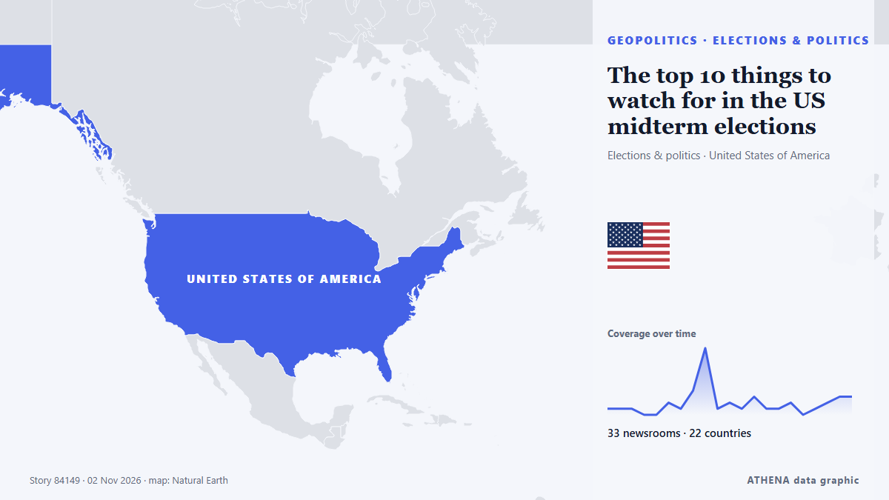

The top 10 things to watch for in the US midterm elections

And what it could all mean for New Zealand. από RNZ National
Αναφέρθηκε ανεξάρτητα από 38 μέσα σε 25 χώρες από τις 28 Οκτ, πρώτο το The Hill· η κάλυψη εξαπλώνεται ακόμη. Το ATHENA εκτιμά τον κίνδυνο μέτριο (2.1/10), κυρίως λόγω της σοβαρότητάς του και της εμβέλειάς του. Βεβαιότητα 90% (υψηλή): το επιβεβαιώνουν 38 ανεξάρτητα μέσα, μέση αξιοπιστία 74%. Μέσα ανά χώρα: Ηνωμένες Πολιτείες (9), Σαουδική Αραβία (3), Τουρκία (3). Κάλυψη: 28 Οκτ έως 2 Νοε, 124 ώρες.
Γιατί έχει σημασία: Οι εξελίξεις στην ασφάλεια και τη διπλωματία μπορούν να μετατοπίσουν συμμαχίες, εμπόριο και αγορές πολύ πέρα από τις χώρες που εμπλέκονται.
Τι άλλαξε: 7 νέες αναφορές από 7 μέσα στο 24ωρο έως 3 Νοε.
Πρώτη διατύπωση: Trump’s reckoning: Why the US midterm elections matter to the rest of the world
Οι τίτλοι των ειδήσεων παρουσιάζονται στα αγγλικά, όπως δημοσιεύτηκαν.
Με μια ματιά
Επιλέγεται, βαθμολογείται και γράφεται από τη δημοσιευμένη μεθοδολογία του ATHENA. Κανένας συντάκτης δεν παρεμβαίνει σε μεμονωμένα γεγονότα. Πώς παράγεται ›
| 28 Oct 12:00 UTC | 1 |
|---|---|
| 28 Oct 18:00 UTC | 1 |
| 29 Oct 00:00 UTC | 1 |
| 29 Oct 06:00 UTC | 0 |
| 29 Oct 12:00 UTC | 0 |
| 29 Oct 18:00 UTC | 2 |
| 30 Oct 00:00 UTC | 1 |
| 30 Oct 06:00 UTC | 4 |
| 30 Oct 12:00 UTC | 11 |
| 30 Oct 18:00 UTC | 1 |
| 31 Oct 00:00 UTC | 2 |
| 31 Oct 06:00 UTC | 1 |
| 31 Oct 12:00 UTC | 3 |
| 31 Oct 18:00 UTC | 1 |
| 01 Nov 00:00 UTC | 1 |
| 01 Nov 06:00 UTC | 2 |
| 01 Nov 12:00 UTC | 0 |
| 01 Nov 18:00 UTC | 1 |
| 02 Nov 00:00 UTC | 2 |
| 02 Nov 06:00 UTC | 3 |
| 02 Nov 12:00 UTC | 4 |
| 02 Nov 18:00 UTC | 2 |
| 03 Nov 00:00 UTC | 3 |
| 03 Nov 06:00 UTC | 0 |
| 03 Nov 12:00 UTC | 1 |
Γιατί αυτοί οι αριθμοί
Σημασία
Κίνδυνος
Βεβαιότητα
Η κάλυψη — ποιος το ανέφερε και πότε
ο τίτλος όπως δημοσιεύτηκε · ανοίγει το πρωτότυπο- The Hill · Ηνωμένες ΠολιτείεςThe midterm legal fight is already here
- Committee to Protect Journalists · Ηνωμένες ΠολιτείεςHow journalists can stay safe–and how we can protect America’s press–on midterm Election Day and beyond
- The Hill · Ηνωμένες ΠολιτείεςDOJ's California ballot fight rejected by another judge
- PBS NewsHour · Ηνωμένες Πολιτείες5 expert takeaways on 2026 midterm election security
- PBS NewsHour · Ηνωμένες ΠολιτείεςWATCH: How does The Associated Press call 2026 midterm election winners? 4 things to know
- The National · Ηνωμένα Αραβικά ΕμιράταWatching the US midterm elections from the Middle East
- AzerNews · ΑζερμπαϊτζάνPope Leo XIV requests mail-in ballot for US midterm elections
- CNBC World · Ηνωμένες ΠολιτείεςTrump rallies in Kansas and Iowa are back on after RNC said they were canceled: Source
- TheJournal.ie · ΙρλανδίαPope Leo has voted from the Vatican by postal ballot in the US midterm elections
- The Independent · Ηνωμένο ΒασίλειοTrump’s reckoning: Why the US midterm elections matter to the rest of the world
- Arab News · Σαουδική ΑραβίαPope warns AI agents are ‘tools, not persons’
- Free Malaysia Today · ΜαλαισίαPope warns AI agents are ‘tools, not persons’
- ANSA English · ΙταλίαPope has voted in the midterms says Vatican
- ANSA English · ΙταλίαPope has voted in the midterms says Vatican
- France 24 English · ΓαλλίαHow will the women's vote shape the US midterms?
- Bangkok Post — page reader · ΤαϊλάνδηVatican says Pope Leo voted in US midterm election
- Capital FM · ΚένυαPope Leo XIV becomes first pontiff to vote in a US election
- The Korea Times · Νότια ΚορέαLeo XIV has become first pope in history to vote in US general election
- Foreign Policy · Ηνωμένες ΠολιτείεςU.S. Allies Have Midterm Fever
- Kyiv Post · ΟυκρανίαPope Leo XIV Votes in US Elections: First Time for a Pontiff
- Asharq Al-Awsat (English) · Σαουδική ΑραβίαPope Leo Makes History with US Midterm Vote
- KQED News (San Francisco) · Ηνωμένες ΠολιτείεςElection 2026: Where Can I Drop Off My Midterm Ballot This Weekend— or Vote Early?
- Türkiye Today · ΤουρκίαPope Leo XIV says AI agents should not have legal personhood or rights
- TRT World · ΤουρκίαTrump may consider major Iran strike if Republicans lose ground in midterms: report
- Indian Express · ΙνδίαUS midterm elections 2026: Election Day date, polling hours, results and when to expect winners
- The Independent · Ηνωμένο ΒασίλειοPope Leo dribbles golden basketball and tries to stay neutral as rival US teams descend on Vatican
- Cyprus Mail · ΚύπροςPope Leo tries to stay neutral as basketball rivals descend on Vatican
- APA (English) · ΑζερμπαϊτζάνMore than 50m Americans cast ballots in early voting with three days to go before midterms
- Greek City Times · ΕλλάδαArchbishop Elpidophoros Casts First Vote as American Citizen
- Indian Express · ΙνδίαUS Midterm Elections Live Updates: Trump makes last campaign stop in Iowa, Kansas as Republicans try to save polls
- Greek Reporter · ΕλλάδαAt Least 50 Greek Americans Run for Office in U.S. Midterm Elections
- Egypt Independent · ΑίγυπτοςPope Leo makes history by voting in US midterms
- Al Jazeera English · ΚατάρWhy governors’ races are important in the 2026 US midterms
- Indian Express · ΙνδίαWhat are US midterms, why these elections matter to India
- Asharq Al-Awsat (English) · Σαουδική ΑραβίαDemocrats, Trump Hold Final Rallies Before Midterm Elections
- Ada Derana · Σρι ΛάνκαTrump makes final campaign push as US midterm elections approach
- Türkiye Today · ΤουρκίαTrump makes final campaign push ahead of US midterm elections
- Mississippi Today · Ηνωμένες ΠολιτείεςWhat you need to know to vote in Mississippi 2026 midterm elections Tuesday
- Euronews English · ΓαλλίαUS midterm elections 2026: What are they and when will we know the results?
- RNZ National · Νέα ΖηλανδίαThe top 10 things to watch for in the US midterm elections